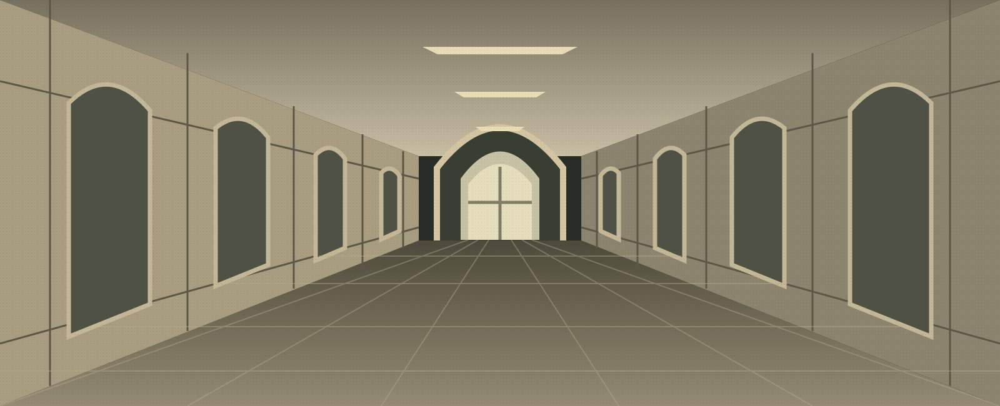

Право на ошибку.
Право на жизнь.
Нурмукасан хотел, чтобы люди снова научились думать. Алтемир пытается доказать, что мысль, навязанная страхом, уже не свободна.
Сначала пропал шум. В коридорах КБТУ больше не спорили о решениях: сравнивали ответы. Одна и та же ошибка кочевала из лабораторной в лабораторную, безупречно оформленная, уверенная в себе — и никем не понятая. Нурмукасан замечал это раньше других. Его раздражали не машины. Его пугало, как охотно люди отдают им право быть неправыми.
Когда в его руках оказалась чёрная тетрадь, тревога получила чудовищно простой выход. Нужно было знать лицо. Нужно было написать имя. Остальное делала тишина.
Первым погиб студент, который продавал сгенерированные лабораторные и не мог объяснить ни строчки собственного «решения». Потом — ещё двое. В студенческих чатах появился анонимный манифест: «Если вы перестали пользоваться разумом, зачем он вам?» Подпись состояла из одного слова: Кира.
«Он наказывает людей за то, что они перестали думать. Но сам уже перестал сомневаться».Алтемир, из заметок по делу Киры
Алтемир прочитал манифест в 03:17. На соседнем мониторе ИИ дописывал очередной компонент. Он остановил генерацию, перечитал код и удалил половину. Не из страха. Просто там была ошибка.
В университете его называли L — наполовину в шутку, наполовину потому, что за его спокойствием всегда скрывался ещё один вопрос. Лучший вайбкодер кампуса не отрицал, что пользуется ИИ. Он отрицал другое: будто инструмент освобождает человека от ответственности за результат.
Продолжить расследование
Сопоставив время смертей с университетским расписанием, Алтемир нашёл странность: Кира действовал в промежутках между парами. Не машина, не всевидящий бог — человек, которому тоже нужно успеть в аудиторию. Впервые у страха появился маршрут.
Тогда L устроил ловушку. В закрытом чате появился вымышленный студент, публично хваставшийся покупными работами. Каждой группе показали разные имя и фотографию. Алтемир ждал не смерти — реакции: сообщения, удаления, малейшего движения в цифровой тишине.
Нурмукасан заметил подмену. Слишком правильное лицо. Слишком удобное признание. Он закрыл тетрадь, не дописав последнюю букву. В тот же вечер на экране L появилось сообщение: «Ты строишь будущее на чужих ответах».
Алтемир ответил только утром: «А ты — на чужом отсутствии».
Теперь в коридорах снова спорят. Кто-то впервые за семестр решает лабораторную сам. Кто-то боится даже открыть ноутбук. Нурмукасан принимает оба случая за победу. Алтемир знает: между ними — вся разница на свете.
Пока один ищет имя, другой ищет доказательство. И оба знают: следующая ошибка может стать последней.
